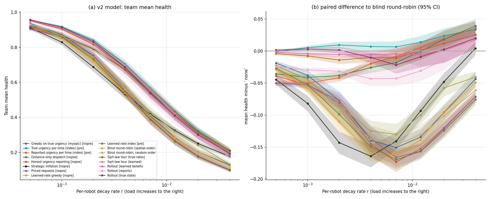
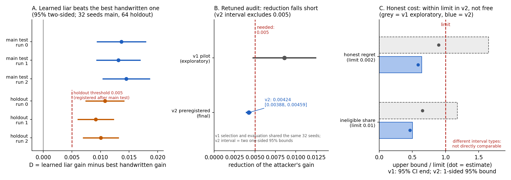

稀缺資源可以免費宣稱時，稽核抓得到謊言嗎？
一個共用的服務者，幾個可以免費自報緊急度的代理人，其中有些會誇大。我研究的是：精確資訊值多少、稽核什麼時候有用，以及學習型的說謊者能不能勝過手寫的說謊策略。結論先講：精確資訊只值一點（約 0.02，量尺是 0 到 1 的機器人平均健康度），遠小於相信免費回報的代價；抵達時與派遣時的稽核都會被手寫說謊者擊敗，而隨機突擊稽核（raids，連得標者也可能被抽查的突擊檢查）在我試過的 45 種策略下撐住了；學習型說謊者在一個固定機制裡找到了可量測的額外好處；而我想針對它修補稽核的嘗試，效果不夠。
兩分鐘看懂
- 第一部分。在 8 台機器人的模型裡，總是先服務最緊急的那台（即使用真實緊急度），在每一種測過的負載下都輸給單純輪流，因為它忽略了路程。相信免費回報的代價，遠大於精確知識的價值。
- 方向一。在服務者抵達時才稽核，擋不住說謊。在派遣時稽核成本低，但只對看不到別人出價的說謊者穩健。原本計畫的通用理論被否證，已放棄。
- 方向二。一個小型神經網路學會說謊，在固定的稽核機制下勝過最好的手寫說謊策略；另一組獨立、全新的 64 個種子（門檻在第一次測試之後、holdout 執行之前訂定）再次看到這個優勢。
- E1。針對這個攻擊者重新調整稽核，只讓它的收益降低 0.0042，沒達到我事先承諾的 0.005。結論：效果不足。
讀法與符號
- 隊伍健康度：機器人的平均健康度，0（死亡）到 1（完全健康）。輪流（round-robin）：單純按順序輪流服務。
- r：第一部分指負載（機器人衰退的快慢）；方向一、二指宣稱與稽核之間真實狀態漂移得多慢（越接近 1 漂移越慢）。
- G：說謊者相對於誠實時的平均收益。D：學習型說謊者的 G 減去最佳手寫說謊者的 G。
- 後悔值（regret）：誠實代理人每輪平均吃的虧。不合格比例（ineligible share）：代理人被標記後遭停權的輪數比例。
- M3C：方向一、二使用的固定稽核機制。它在派遣時檢查宣稱、跨多輪累積證據、對可疑者暫時停權，之後再寬恕。E1 重新調整的就是它的三個可調參數。
- holdout：用全新隨機種子做的獨立複測。95% 與 90% 區間：95% 雙側區間是一般的信賴區間；90% 雙側區間由兩個單側 95% 界組成。每次我都標明是哪一種。
為什麼對這個題目有興趣
我是從做多機器人探索系統時走到這個題目的：一支隊伍共用一個致動器，同一時間只能服務一台機器人。每台機器人回報自己私有、無法驗證的緊急度，而且求助不用付代價。大家都寫「先服務最緊急的」，但緊急度可以免費宣稱，我沒辦法為這條規則辯護。所以我先建了一個小型的抽象模擬來檢查它。第一個意外是：在 8 台機器人的模型裡，總是先服務最緊急的那台——即使用的是真實的緊急度——在每一種測過的負載下都輸給單純的輪流，因為它忽略了服務者要走多遠。這讓我接著問：回報帶有策略時會怎樣、事後稽核何時有用、學習型的說謊者能不能勝過手寫策略。在這之前我大約三年都在做系統，沒有做過理論；這個專案是我學著把這類問題問清楚、驗證清楚的過程。這個 repo 就是從這些問題長出來的抽象研究，並不主張真實機隊會這樣行為。
機器為什麼會虛報？這裡的「說謊」指的是對回報者有利的系統性偏差。來源可能是不同業主的機器人共用充電站或電梯、學習型的回報策略自己發現誇大有好處，或是估計器本身有偏差，在派遣者看來和說謊一模一樣。
研究歷程
共四段，每段都寫出什麼站得住、什麼沒有。每個區間都標明種子數與信賴水準（95% 或 90%）。所有結果都來自簡化模型的模擬。
第一部分：派遣與資訊的價值 定稿

figures/fig7_v2_load_sweep.png，資料 results.json 的 v2_sweep，在 figures/README.md 標為 main (C1)。關鍵數字（32 個種子，95% t 區間）
- 精確資訊的價值，3 台機器人、衝擊比例 0.5：0.019 [0.017, 0.021]（隊伍健康度）
- 相信回報（fused index，直接依自述派遣的派遣者）的損失：3 台 0.247 [0.223, 0.272]；8 台 0.40 [0.36, 0.44]
- 抵達時稽核（服務者到了才檢查）的損失 0.024 [0.010, 0.038]（3 台）；派遣時稽核 0.0027 [0.0001, 0.0052]，約為前者的 1/9（偏樂觀：最佳回應搜尋未收斂，收斂率 3 台 0.25、8 台 0.00，10 格中 5 格區間含 0）
- 8 台機器人時，緊急度優先的派遣在所有測試負載下都輸給輪流
沒成功的地方與限制：我自己提出的「派遣稽核損失為零」被推翻；預定的 27 個設定格只跑了 10 個。
- 我自己事先提出的假設「派遣稽核的損失為零」被推翻並撤回。我也不主張「資訊價值小於 0.02」：統計上和這個門檻分不開。
- 派遣稽核的損失及其與抵達稽核的比值偏樂觀：未收斂的搜尋可能漏掉有利可圖的謊。
- 有幾項發現（距離感知規則、廉價談話崩潰、定價）只是對已知理論的量化檢查，不是新現象。
- 預定的 27 個設定格只跑了 10 個；精確基準只做到 3–4 台；策略集有限；協定是專案中途才寫的，不是嚴格的預先登記。
方向一：何時稽核 已結案
關鍵數字（3 個代理人、100,000 輪、32 個評估種子；± 約為 1.96 個標準誤）
- r=0.5 時說謊者的最大收益 G：抵達稽核 0.2795 ± 0.0004，單純相信 0.2793 ± 0.0004
- 派遣稽核，看得到別人出價的說謊者（oracle edge）：r=0.9 時 0.0211 ± 0.0033；r=0.5 時 0.0870 ± 0.0053
- 隨機突擊稽核：對 45 種策略 G = 0.0000 ± 0.0000，誠實代理人每輪後悔值 0.0162 ± 0.0001
沒成功的地方與限制：原本計畫的通用理論失敗；突擊稽核的「G = 0」只代表在 45 種手寫策略內沒找到收益。
- 原本期待的通用縮放定律與定理失敗：指數在一個誤罰目標下是 1.26 [1.13, 1.39]，在另一個下是 2.18 [1.77, 2.63]。我在跑實驗前寫下的否證條件讓我停止了這條理論路線；貢獻因此變成一張經驗地圖。我沒有證明任何定理。
- 早先「派遣稽核能嚇阻說謊」的說法，在紅隊加入 oracle-edge 說謊者後撤回。第一版突擊設計從不稽核得標者，在 r=1 時留下 0.1811 ± 0.0721 的收益。
- 突擊的 G = 0 是下限（最大值本來就包含誠實策略），意思是「在 45 種手寫策略內找不到收益」，不是「不可能有收益」。只有 3 個代理人；突擊的成本還沒換算成實際路程；事先寫下的四個否證條件中有一個無法判定；不是正式的預先登記。
方向二：學習型說謊者 vs. 手寫說謊者 已結案

scripts/portfolio_figures.py 從原始結果檔繪製；向量版：SVG。關鍵數字（95% 雙側配對 t 區間；主測試 32 個種子，holdout 64 個種子）
- 主測試 run 0：學習型收益 0.03452，手寫 0.02087；D = +0.01366 [+0.00932, +0.01800]；3 次訓練的下界全部大於 0
- 獨立 holdout run 0：D = +0.010778 [+0.007362, +0.014194]，高於 0.005 門檻（主測試之後、holdout 之前登記）；run 1、2：+0.009158、+0.010068
- 誠實代理人每輪後悔值：沒有說謊者時 0.00686，有學習型說謊者時 0.01957。（run 0、r=0.5 的平均；後悔值差異沒做顯著性檢定。）攻擊沒有改善系統效率。
沒成功的地方與限制：只是單一固定機制的下界，不是安全結論，也不是最佳攻擊；第一次測試對 run 0 並不獨立。
- 原本的測試對 run 0 並沒有提供獨立證據（同一個策略先前在校準步驟中已在那些種子上評估過）。所以才有 holdout；門檻是在我看過主測試之後、holdout 執行之前登記的。
- 偵測力的校準被削弱：樣本外的三個弱點中，只有 2 個有利用證據，不是 3 個。
- 這是可利用性的下界，只針對一個固定機制、一種策略類型、一個訓練預算。它不是最佳攻擊、不是安全結論，也沒有涵蓋突擊機制或其他手寫策略。區間反映的是種子變異，不是重新訓練的不確定性。holdout 的區間比預期寬（半寬 0.003416，計畫為 0.002352）。
E1：防守方能修補嗎？ 定稿、預先登記、負面結果
關鍵數字（v2 測試，1,024 個種子；區間為 90% 雙側，即兩個單側 95% 界）
- 攻擊者收益：原本 0.034755，修補後 0.030519。降幅 0.004236 [0.003883, 0.004589]，約 12%；區間不含 0.005
- 誠實代價，點估計（95% 上界，上限）：後悔值 +0.001173（0.001283，0.002）；不合格比例 +0.004628（0.005032，0.01）。在上限內，但為正，所以不是免費。
- 探索性的 v1 試跑報告降幅 0.0086 [0.0047, 0.0125]（95%），但誠實代價的上界超過上限（0.0033 與 0.0118）。
沒成功的地方與限制：試跑中看似有希望的結果沒能通過預先登記；這不是「修補有效」的宣稱。
- 看起來有希望的 v1 試跑，在預先登記的 v2 中沒有站住；v1 的選擇與評估用的是同一組 32 個種子，v2 的估計值約為它的一半。兩者是不同的量，我沒有把它們合併。
- 這不是「修補有效」的宣稱，也不是均衡（只做了兩輪防守與攻擊）；攻擊者是選擇集上 12 個條目（9 組相異攻擊者）中最強的，且都源自原始機制。攻擊者對修補後的稽核可能偏弱，真實降幅可能更小。殘餘收益是 0.030519，離零很遠。
- 尚未解釋：選擇集上的降幅（0.002631）與測試（0.004236）相差約 2.4 個標準誤。針對改動後的稽核，沒有重新檢查植入式弱點的偵測力。次要結果（12 個條目、9 組相異攻擊者：0.0033 到 0.0043）沒有改變結論。
我做了什麼（工程面）
- 小規模隊伍的精確動態規劃基準，以及一個 float64 的 GPU 模擬器，能逐個種子重現 CPU 參考實作（已存檔的檢查中最大差異約 1e-15）。
- 方向二的環境用 CUDA Graph 加速，並在讀取測試種子之前，與一般（eager）版本逐位元比對過。
- 用演化策略（sep-CMA-ES）訓練的 55 參數神經策略，以及帶帳本的凍結評估協定，讓每組測試種子只用一次。
tests/下的 pytest 測試套件，以及把每個報告數字對應到 JSON 欄位的數字稽核。
重現方式（取自 repo 的 README 與 Makefile）：make quick（小型 CPU 冒煙測試）、make replot（用已存的 JSON 重畫第一部分所有圖）、make test，以及 cd docs && python3 -m http.server 8000 在本機執行 demo。
我學到什麼
- 先寫下失敗條件。事先寫好的條件，讓我能停掉走不通的理論（方向一），也讓 E1 的負面結果照事先約定的門檻報告，而不是回頭調整說法。
- 攻擊自己的結論。紅隊審查推翻了「派遣稽核能嚇阻說謊」的說法，也找出從不檢查得標者的突擊設計。精確基準則顯示，我第一版「資訊沒有價值」主要是忽略路程造成的假象。
- 把已看過的證據和新證據分開。發現第一次測試不獨立時，我是加做一組有登記門檻的 holdout，而不是移動門檻。E1 的測試種子只用一次。
- 報告區間，也報告它的信賴水準。同一個效果在不同測試中數字不同（D = 0.01366、0.010778），每一個都標明它的角色。
誠實的限制與開放問題
- 全部是少數代理人的抽象模擬。這裡沒有任何東西顯示真實機隊會虛報。
- 學習型與手寫的攻擊者都只給出下界。更強的攻擊者能做到多糟？如果防守方與攻擊者聯合訓練（而不是只做兩輪），會收斂到什麼嗎？
- 突擊機制對手寫說謊者很穩健。它對學習型說謊者也穩健嗎？尚未測試。
- 改變稽核的結構，會不會比只重新調整三個參數更有效？E1 只測了重新調參。
- 抽象的稽核模型還沒有接回空間環形模擬，所以突擊在路程上的實際成本沒有量過。
證據索引
| 階段 | 結論文件 | 論文／demo／資料 |
|---|---|---|
| 第一部分 | claims.md、數字稽核 | 論文、Demo 1、results/ |
| 方向一 | summary.md、數字稽核 | 論文、Demo 2 |
| 方向二 | conclusion.md、main.md、holdout、數字稽核 | 方向二 README、main.json、holdout 結果 |
| E1 | e1-v2.md、e1-pilot.md | e1v2/result.json、預先登記的設計 |
| 過程 | 決策紀錄（中文）、文件導覽 | repo 與 README |
研究是怎麼做的
研究是和 AI agent 一起做的：主 agent 規劃與審查、子 agent 跑實驗、紅隊攻擊結論、白隊檢查有沒有過度樂觀。主題與方向由我選定，最後判斷也由我做。